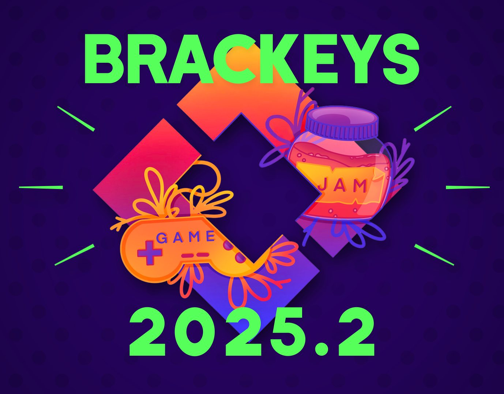
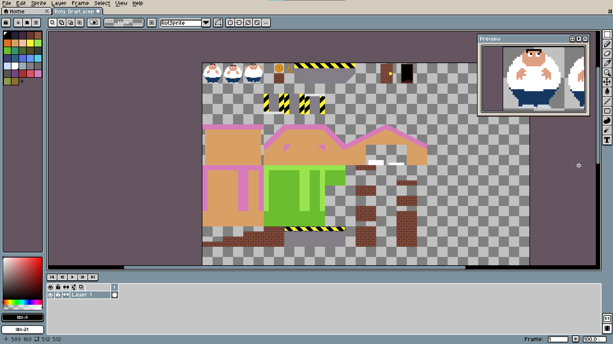

Game jam · Brackeys Game Jam 2025.2
Just One More Cookie
Eat cookies, gain weight, get the Coo-KEY, and complete this simple yet novel platformer!

Overview
Just One More Cookie is a short platformer made for Brackeys Game Jam 2025.2. Eating cookies makes the character heavier, which changes how they move, so each cookie is both a reward and a trade-off on the way to the Coo-KEY that unlocks the exit.
My role
- Came up with the game concept and core mechanics.
- Created the character sprites, tiles, props and animations in Aseprite.
- Worked with the developer on implementation and level design in Godot.
Art
